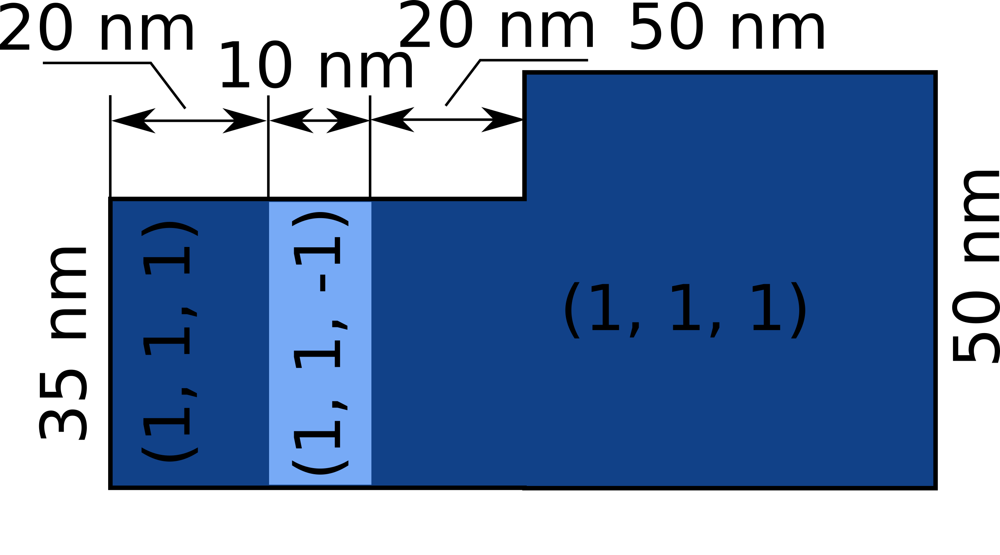

Magnetisation field¶
One of the main objects, which we have to be specify as a part of the micromagnetic system is the magnetisation field \(\mathbf{M}\). In Ubermag, by defining the magnetisation field, the mesh, the geometry of the sample, as well as the magnetisation saturation \(M_\text{s}\) are defined.
The Ubermag package we use to define finite difference regions, meshes, and fields is discretisedfield and we have to import it before we use it.
[1]:
import discretisedfield as df # df is just a shorter name
Region¶
In finite differences, the region on which the mesh and the field are specified is always “cubic”. In order to define a mesh, two points \(p_{1}\) and \(p_{2}\) must be passed to discretisedfield.Region. Those points correspond to two points between which the region spans.
For instance, if we want to define the following region:
two points we need to pass are:
In Ubermag, points are defined as length-3 iterables, for instance, tuples. Accordingly, the region we want is:
[2]:
p1 = (0, -20e-9, 0) # point 1
p2 = (100e-9, 20e-9, 10e-9) # point 2
region = df.Region(p1=p1, p2=p2)
There are several quantitites we can ask the region object for.
[4]:
region.pmin # minimum coordinate in the region
[4]:
(0.0, -2e-08, 0.0)
[5]:
region.pmax # maximum coordinate in the region
[5]:
(1e-07, 2e-08, 1e-08)
[6]:
region.centre # the region centre
[6]:
(5e-08, 0.0, 5e-09)
[7]:
region.edges # edge lengths of the region
[7]:
(1e-07, 4e-08, 1e-08)
We can visualise the region using either matplotlib mpl() or k3d k3d().
[8]:
region.mpl()
[9]:
region.k3d()
Mesh¶
After the region is defined, we need to discretise it in order to define a mesh. There are two ways how a region can be discretised - by passing:
Discretisation cell size (
cell), orNumber of discretisation cells in all three directions (
n).
Let us say we want to discretise our region in cells of size \((10\,\text{nm}, 10\,\text{nm}, 10\,\text{nm})\). Then, we pass the region and the cell size to Mesh class.
[10]:
cell = (10e-9, 10e-9, 10e-9) # discretisation cell
mesh = df.Mesh(region=region, cell=cell) # mesh definition
We can then inspect some basic parameters of the mesh.
[11]:
mesh.n # number of discretisation cells
[11]:
(10, 4, 1)
[12]:
len(mesh) # total number of discretisation cells
[12]:
40
We can visualise the region using either matplotlib mpl() or k3d k3d().
[13]:
mesh.mpl()
[14]:
mesh.k3d()
When we have the mesh object created, we can access the region using . operator. For instance:
[15]:
mesh.region.centre
[15]:
(5e-08, 0.0, 5e-09)
Field¶
After we defined the mesh, we can define a finite difference field. For that, we use Field class. We must provide the following 3 mandatory parameters:
mesh (
meshasdiscretisedfield.Mesh),dimension of the value (e.g.
dim=1for scalar,dim=3for vector),value of the field (
value).
For instance, let us define a 3D-vector field (dim=3) that is uniform in the \(x\)-direction value=(1, 0, 0) direction.
[16]:
m = df.Field(mesh, dim=3, value=(1, 0, 0))
A simple visualisation of the field in \(z\)-slice through the middle is:
[17]:
m.plane('z').mpl()
Similarly, a three-dimensional interactive plot is:
[18]:
m.k3d_vector(head_size=20)
The average value of the field is:
[19]:
m.average
[19]:
(1.0, 0.0, 0.0)
We can specify the norm of the field, by passing norm parameter. In the case of magnetisation, norm corresponds to magnetisation saturation \(M_\text{s}\).
[20]:
Ms = 8e6 # A/m
m = df.Field(mesh, dim=3, value=(0, 0, 1), norm=Ms)
Now, if we have a look at the average:
[21]:
m.average
[21]:
(0.0, 0.0, 8000000.0)
Spatially varying field value¶
When we defined a uniform vector field, we used a tuple value=(1, 0, 0) to define its value. However, we can also pass a callable (e.g. Python function) if we want to define a non-uniform field. This function takes the coordinate of the mesh cell as an input, and returns a value that the field should have at that point. The function must be defined at all points in the mesh.
[22]:
def m_value(point):
x, y, z = point # unpack position into individual components
if y > 0:
return (1, 0, 0) # return, not print
else:
return (-1, 1, 0)
m = df.Field(mesh, dim=3, value=m_value)
Now, we can plot it using mpl.
[23]:
m.plane('z').mpl()
The field object can be treated as a callable - if we pass a point to the function, it will return the vector value of the field at that location:
[24]:
point = (0, -10e-9, 0)
m(point)
[24]:
(-1.0, 1.0, 0.0)
[25]:
point = (0, 10e-9, 0)
m(point)
[25]:
(1.0, 0.0, 0.0)
[26]:
m(m.mesh.region.centre)
[26]:
(1.0, 0.0, 0.0)
Spatially varying \(M_\mathrm{s}\)¶
By defining a norm of a field, we can specify different geometries. More precisely, we can set \(M_\text{s}=0\) where no magnetic material is present. For instance, let us assume we want to define a sphere of radius \(r=50\,\text{nm}\), disrectised by 10 cells in each direction, and magnetise it in the negative \(y\)-direction.
[27]:
r = 50e-9
n = (10, 10, 10)
region = df.Region(p1=(-r, -r, -r), p2=(r, r, r))
mesh = df.Mesh(region=region, n=n)
def Ms_value(point):
x, y, z = point
if x**2 + y**2 + z**2 < r**2:
return Ms
else:
return 0
m = df.Field(mesh, dim=3, value=(0, -1, 0), norm=Ms_value)
m.plane('z').mpl()
We can inspect the defined domain using k3d and inspecting the field’s norm.
[28]:
m.norm.k3d_nonzero()
Example¶
Let us define a thin-film disk sample of thickness \(t = 10 \,\text{nm}\) and diameter \(d = 120 \,\text{nm}\). The saturation magnetisation \(M_\mathrm{s} = 10^{7}\mathrm{A/m}\). The disk is centred at the origin (0, 0, 0) and the magnetisation is \(\mathbf{m} = (1, 0, 0)\) at all mesh points.
[29]:
t = 10e-9 # thickness (m)
d = 120e-9 # diameter (m)
cell = (5e-9, 5e-9, 5e-9) # discretisation cell size (m)
Ms = 1e7 # saturation magnetisation (A/m)
region = df.Region(p1=(-d/2, -d/2, -t/2), p2=(d/2, d/2, t/2))
mesh = df.Mesh(region=region, cell=cell)
def Ms_value(point):
x, y, z = point
if (x**2 + y**2)**0.5 < d/2:
return Ms
else:
return 0
m = df.Field(mesh, dim=3, value=(1, 0, 0), norm=Ms_value)
m.norm.k3d_nonzero()
Now, let us say we want to extend the solution from the previous example so that the magnetisation is:
with saturation magnetisation \(M_\text{s} = 10^{7} \,\text{A}\,\text{m}^{-1}\).
[30]:
def m_value(pos):
x, y, z = pos
if y <= 0:
return (-1, 0, 0)
else:
return (1, 1, 1)
m = df.Field(mesh, dim=3, value=m_value, norm=Ms_value)
m.plane('z', n=(15, 15)).mpl()
Exercise¶
Define the following sample with \(10\,\text{nm}\) thickness:

The magnetisation saturation is \(M_\mathrm{s} = 8 \times 10^{6} \,\mathrm{A}\,\mathrm{m}^{-1}\) and the magnetisation direction is as shown in the figure.
Solution
[31]:
cell = (5e-9, 5e-9, 5e-9) # discretisation cell size (m)
Ms = 8e6 # saturation magnetisation (A/m)
region = df.Region(p1=(0, 0, 0), p2=(100e-9, 50e-9, 10e-9))
mesh = df.Mesh(region=region, cell=cell)
def Ms_value(pos):
x, y, z = pos
if x < 50e-9 and y > 35e-9:
return 0
else:
return Ms
def m_value(pos):
x, y, z = pos
if 20e-9 < x <= 30e-9:
return (1, 1, -1)
else:
return (1, 1, 1)
m = df.Field(mesh, dim=3, value=m_value, norm=Ms_value)
m.plane('z').mpl()